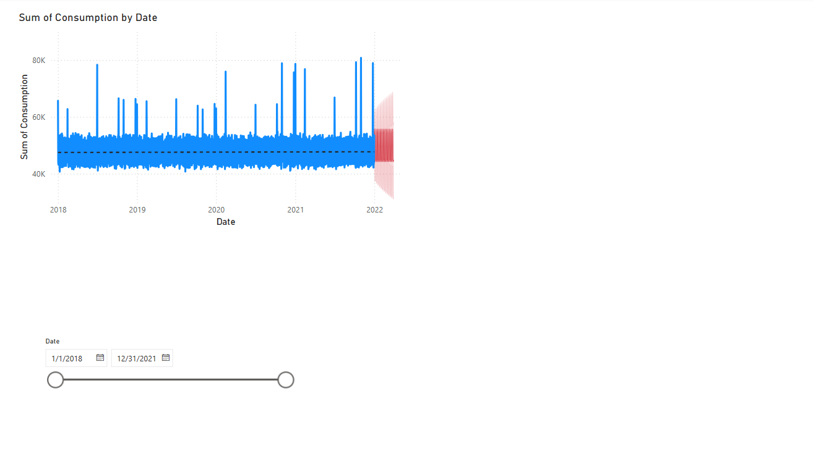

📈 Forecast Consumption Trend
This dashboard uses time series forecasting to project future consumption levels. It helps in:
- Planning stock replenishment based on trends
- Preventing future shortages
- Visualizing daily consumption with forecast overlays

← Back to Portfolio